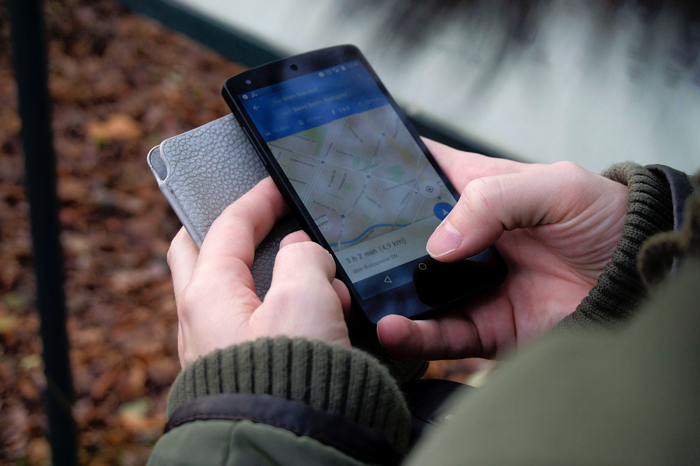

The night before an interview can be a stressful time, filled with “what if’s?” What if I don’t know the answer to a question? What if I trip and fall on my way into the office? What if I sleep through my alarm and miss the entire thing and never get a job ever again? You’re certainly not alone thinking these things — it’s totally normal to be nervous! The first step is accepting the fact that your mind will do what it can to get in the way. You can fight back, though. You just need to prepare. When you’re prepared, there’s really no reason to worry. To help, here are eleven things you should do the night before an interview.
1. Lay out your outfit
Even if this is something you never do on a regular basis, laying out your outfit the day before ensures you’re not scrambling in the morning to come up with something appropriate. Plus, it’s a great opportunity to make sure your shoes match and that your clothes are stain and wrinkle-free.
2. Pack your bag
Next, pack your bag (or briefcase) with all the essentials — water, a stain stick, makeup, and of course, a copy of your resume (and portfolio if needed).
3. Figure out where you’re going and how you’re getting there
Use Google Maps or Waze to make sure you know the route — and check any emails from the company for information on transit, parking, and any confusing entrances. If you’re interviewing at a big building or company, plan on spending five to 10 minutes dealing with security.
4. Review answers to the most common questions

Every interview has a different feel, but you can still practice. The easiest way to do that is to review some of the most common interview questions, which will help you feel prepared and confident. By practicing these question it will help you get a better feel of what the actual interview will be like. Try practicing with a friend or family member to get the real feeling of the interview. You can also practice answering each question differently each time to see your options.
5. Research the company and your interviewers

Before an interview, you should have a good sense of the company’s products and services, as well as any recent developments and news. You should also know the names, titles, and departments of your interviewers. Do a quick Google search and a little LinkedIn stalking to get some background on what they might be working on and what their interests are.
6. Print out your resume
Sadly, the hiring manager may not have your resume on hand when you arrive. He or she may also invite additional colleagues to the interview. By bringing a physical copy of your resume, you can accommodate either scenario, ensuring that the conversation is always somewhat framed by your experience and skills. Make sure the resume you bring is up to date and the latest version of your resume to prevent further conflict and.or misunderstandings.
7. Plan to eat breakfast (or lunch)

Sure, you might not be in the habit of eating breakfast, but when you have an interview, you should make an exception. Hunger can throw you off your game, so make sure to eat a light breakfast or lunch. And more importantly, plan to do so (which means: give yourself the necessary time).
8. Prepare for the worst
Bad things happen: it starts pouring on your walk, there’s traffic on a street that never has traffic, your shirt rips. While some things can’t be prevented or predicted, you can still prepare for the worst. For example, if you’re worried about sudden road closures or traffic jams, give yourself extra time to arrive. Or, if you’re worried about blanking on an interview question, learn how to stall for time. You can also carry an extra shirt in the event of rips or stains.
9. Create a cheat sheet

Jot down all the nitty-gritty details: who you’re meeting with and what their titles are, a couple past work accomplishments or stories you want to bring up, and the questions you want to ask at the end. Preparing like this can be a huge lifesaver when you’re moments away from meeting the hiring manager and blanking on their name.
10. Get a good night’s sleep
A good night sleep is your secret weapon for a job interview, ensuring you’re at your most charming and lively. To make sure you get some quality shut-eye, turn off your TV, and put down the mobile phone! Social media will still be there after your interview the next day.